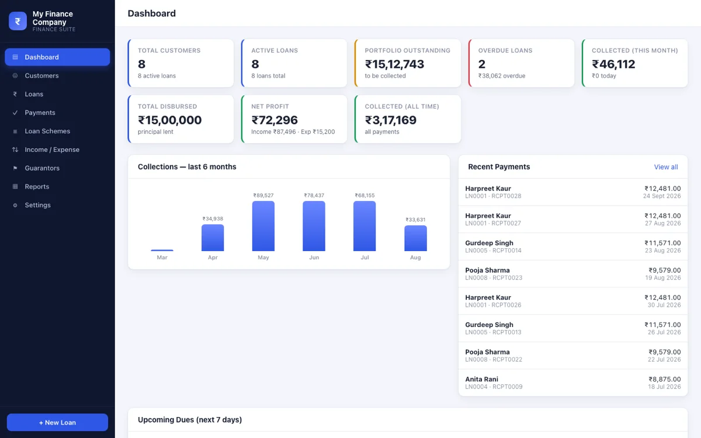
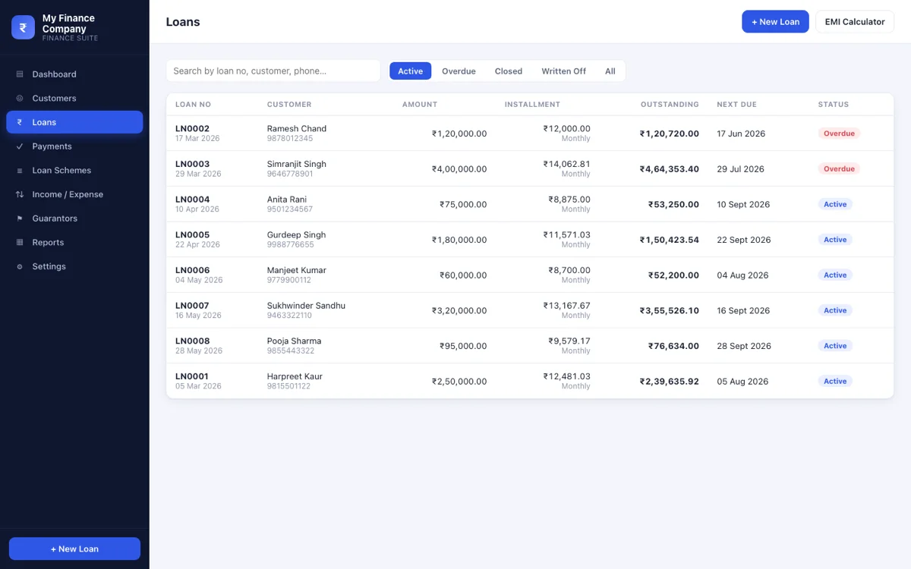

Production software
In daily use
Loan Manager — offline finance back-office
A fully offline, zero-install loan management system shipped to a small finance business and used every day. Pure JavaScript on Node's built-in SQLite engine, so there are no native modules to compile and the whole thing ships as a portable Windows bundle with an embedded runtime.
- Four interest models — reducing-balance EMI, flat, fixed-installment and interest-free — across daily, weekly, fortnightly, monthly and custom schedules
- Correct by construction — balances are recomputed from immutable payment history rather than mutated in place, covered by a 35-assertion test suite over the money math
- Automatic allocation across penalty, interest and principal, with printable receipts, statements and agreements
- Ships itself — NSIS installer and portable ZIP built by a GitHub Actions pipeline, plus crash-safe staged backup/restore